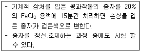
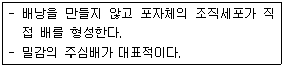
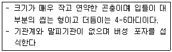
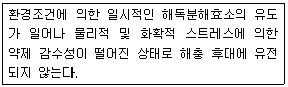
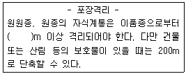
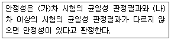
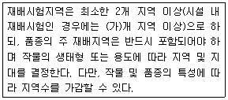
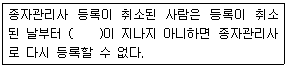

종자기사 (2018-04-28 기출문제)
1과목: 종자생산학
1. 벼의 포장검사 규격에 대한 설명으로 옳지 않은 것은?
- 유숙기로부터 호숙기 사이에 1회 검사한다.
- 채종포에서 이품종으로부터의 격리거리는 0.5m이상 되어야 한다.
- 전작물에 대한 조건은 없다.
- 파종된 종자는 1/3 이상이 도복되어서는 안 된다.
(정답률: 68%)

2. 다음 설명에 해당하는 것은?

- ferric chloride법
- 셀레나이트법
- 말라차이트법
- 과산화효소법
(정답률: 91%)
3. 배의 발생과 발달에 관하여 Soueges와 Johansen은 4가지 법칙을 주장하였는데, “필요 이상의 세포는 만들어지지 않는다.”에 해당하는 것은?
- 기원의 법칙
- 절약의 법칙
- 목적지불변의 법칙
- 수의 법칙
(정답률: 85%)
4. 종자의 순도분석에 관한 설명으로 옳지 않은 것은?
- 표준 종자의 구성내용을 중량의 백분율 구한다.
- 함유되어 있는 종자의 이물을 가려내는 검사다.
- 발아 능력은 검사하지 않는다.
- 미숙립, 발아립, 주름진립은 정립이 아니다.
(정답률: 79%)
5. 작물의 종자생산 관리체계로 옳은 것은?
- 기본식물포→채종포→원원종포→원종포→농가포장
- 기본식물포→원원종포→원종포→채종포→농가포장
- 원원종포→원종포→채종포→농가포장→기본식물포
- 원원종포→원종포→기본식물포→채종포→농가포장
(정답률: 91%)
6. 종자소독 약제의 처리방법으로 적절하지 않은 것은?
- 약액침지
- 종피분의
- 종피도말
- 종피 내 주입
(정답률: 84%)
7. 성숙기에 얇은 과피를 가지는 것을 건과라 하는데 건과 중 성숙기에 열 개하여 종자가 밖으로 나오는 것은?
- 복숭아
- 완두
- 당근
- 밤
(정답률: 70%)
8. 종이나 그 밖의 분해되는 재료로 만든 폭이 좁은 대상(帶狀)의 물질에 종자를 불규칙적 또는 규칙적으로 붙여서 배열한 것은?
- 장환종자
- 피막처리종자
- 테이프종자
- 펠릿종자
(정답률: 82%)
9. 종자에서 정핵과 난핵이 수정되어 이루어진 것은?
- 배유
- 외주피
- 배
- 내주피
(정답률: 86%)
10. 무한화서이며 긴 화경에 여러 개의 작은 화경이 붙어 개화하는 것은?
- 단집산화서
- 복집산화서
- 안목상취화서
- 총상화서
(정답률: 79%)
11. 넓은 뜻의 종자를 식물학적으로 구분 시 “포자를 이용하는 것”에 해당하는 것은?
- 벼
- 겉보리
- 고사리
- 귀리
(정답률: 89%)
12. 양파 채종지의 환경조건으로 잘못된 것은?
- 생육전반기는 서늘해야 하고 후반기는 따뜻해야 한다.
- 최적 토양산도는 pH 7 내외이다.
- 개화기의 월 강우량은 300mm가 알맞다
- 통풍이 잘 되어야 한다.
(정답률: 82%)
13. 일반적으로 종자수확 후 안전저장을 위해 기본적으로 처리해야 할 사항으로 가장 중요한 것은?
- 종자의 정선(精選)
- 종자의 소독
- 종자의 건조
- 종자의 포장(包裝)
(정답률: 77%)
14. 배추과 작물의 채종에 대한 설명으로 옳지 않은 것은?
- 배추과 채소는 주로 인공교배를 실시한다
- 배추과 채소의 보급품종 대부분은 1대잡종이다.
- 등숙기로부터 수확기까지는 비가 적게 내리는 지역이 좋다
- 자연교잡을 방지하기 위한 격리재배가 필요하다.
(정답률: 70%)
15. 다음 중 무배유 종자에 해당하는 것은?
- 보리
- 상추
- 밀
- 옥수수
(정답률: 81%)
16. 작물생식에 있어서 아포믹시스(apomixis)를 옳게 설명한 것은?
- 수정에 의한 배 발달
- 수정 없이 배 발달
- 세포 유합에 의한 배 발달
- 배유 배양에 의한 배 발달
(정답률: 94%)
17. 다음 중 타식성 작물에 해당하는 것은?
- 마늘
- 담배
- 토마토
- 가지
(정답률: 51%)
18. 채종포 관리 중 최우선으로 고려해야 할 사항은?
- 관수 및 배수
- 병충해방제
- 도복방지
- 자연교잡 및 이품종 혼입방지
(정답률: 94%)
19. 종자를 상온저장 할 경우 종자수명은 저장지역에 따라서 어떻게 변하는가?
- 위도가 낮을수록 수명이 길어진다.
- 위도가 높을수록 수명이 짧아진다.
- 위도가 높을수록 수명이 길어진다.
- 위도에 상관없이 수명이 길어진다.
(정답률: 75%)
20. 제(臍)가 종자의 뒷면에 있는 것은?
- 배추
- 시금치
- 콩
- 상추
(정답률: 80%)
2과목: 식물육종학
21. 자가수정 작물의 재래종 집단을 이용한 순계분리육종의 목적으로 옳은 것은?
- 집단 내에서 우량형질을 골라내는 것이다
- 집단 내 모든 개체를 균일하게 하는 것이다
- 우성과 열성을 구별하여 많은 쪽을 고르는 것이다
- 분리의 위험성이 없는 것을 고르는 것이다
(정답률: 75%)
22. 화본과 식물의 돌연변이육종에서 M1세대의 채종은?
- 식물 개체 단위로 채종
- 임성이 낮은 개체에서 채종
- 개체 내 이삭단위로 채종
- 계통 단위로 채종
(정답률: 46%)
23. 육정과정에서 새로운 변이의 창성방법으로서 쓰일 수 없는 것은?
- 인위 돌연변이
- 인공교배
- 배수체
- 단위결과
(정답률: 83%)
24. 형질의 유전력은 선발효과와 깊은 관계가 있다. 선발효과가 가장 확실한 경우는? (h2B는 넓은 의미의 유전력임)
- h2B = 0.34
- h2B = 0.13
- h2B = 0.92
- h2B = 0.50
(정답률: 84%)
25. F1의 유전자 구성이 AaBbCcDd인 잡종의 자식 후대에서 고정될 수 있는 유전자형의 종류는 몇 가지 인가?(단, 모든 유전자는 독립유전 한다.)
- 9
- 12
- 16
- 24
(정답률: 82%)
26. 여교배에서 F1을 자방친으로 사용하는 경우는?
- F1과 화분친의 개화기가 일치하지 않을 때
- F1의 세포질에 불량유전자가 포함되어 있을 때
- F1불임이 심할 때
- F1의 임성이 높을 때
(정답률: 50%)
27. 교배모본 선정 시 고려해야 할 사항이 아닌 것은?
- 유전자원의 평가 성적을 검토한다.
- 유전분석 결과를 활용한다.
- 교배친으로 사용한 실적을 참고한다.
- 목적형질 이외에 양친의 유전적 조성의 차이를 크게 한다.
(정답률: 89%)
28. 다음에서 설명하는 것은?

- 무포자생색
- 복상포자생식
- 부정배형성
- 위수정생식
(정답률: 72%)
29. 식물의 진화 과정상 새로운 작물의 형성에 가장 큰 원인이 된 배수체는?
- 복2배체
- 동질4배체
- 동질3배체
- 이질3배체
(정답률: 76%)
30. 자가수정을 계속함으로서 일어나는 자식약세 현상은?
- 타가수정 작물에서 더 많이 일어난다
- 자가수정 작물에서 더 많이 일어난다.
- 어는 것이나 구별 없이 심하게 일어난다.
- 원칙적으로 자가수정 작물에만 국한되어 있는 현상이다.
(정답률: 67%)
31. 양친의 특정 형질에 대한 분산이 각각 18과 20이고 F2 의 분산이 38인 경우 광의의 유전력은 몇 %인가?
- 18%
- 20%
- 38%
- 50%
(정답률: 54%)
32. 이질 배수체를 작성하는 방법으로 가장 알맞은 것은?
- 특정한 게놈을 가진 품종의 식물체에 콜히친을 처리한다.
- 서로 다른 게놈을 가진 식물체끼리 교잡을 시킨 후 그 잡종에 콜히친을 처리한다.
- 동일한 게놈을 가진 품종끼리 교잡을 시킨 후 그 잡종에 콜히친을 처리한다.
- 인위적으로 만들 수 없고 자연계에서 만들어지기를 기다린다.
(정답률: 85%)
33. 정역교배의 표현으로 가장 옳은 것은?
- A*B, B*A
- (A*B)*A, (A*B)*B
- (A*B)*C,(C*A)*B
- (A*B)*(C*D)
(정답률: 80%)
34. 내충성 품종의 특성으로 옳은 것은?
- 새로운 생태형이 나타날 수 있다.
- 필수 아미노산 함유가 많다.
- 단백질함유가 많다.
- 흡비력이 강하다.
(정답률: 67%)
35. 꽃망울 끝의 꽃잎을 약과 함께 제거하는 제웅 방법은?
- 환상박피법
- 화판인발법
- 절영법
- 개영법
(정답률: 79%)
36. F2에서 개체의 수량성에 대한 선발효과가 없는 이유는?
- 수량성에는 주동유전자가 관여하며 환경영향이 거의 없기 때문이다.
- 수량성에는 주동유전자가 관여하며 환경영향이 크기 때문이다.
- 수량성에는 폴리진이 관여하며 환경영향이 거의 없기 때문이다.
- 수량성에는 폴리진이 관여하며 환경영향이 크기 때문이다.
(정답률: 70%)
37. 육종 대상 집단에서 유전양식이 비교적 간단하고 선발이 쉬운 변이는?
- 불연속변이
- 방황변이
- 연속변이
- 양적변이
(정답률: 67%)
38. 계통육종에서의 선발에 대한 설명으로 틀린 것은?
- F2세대에서는 유전력이 낮은 형질들을 대상으로 강선발을 실시하는 것이 효과적이다.
- F3세대에서는 계통선발을 한 후 선발계통 내의 개체들을 선발한다.
- 계통재배 세대수가 증가할수록 양적형질의 유전력이 증가하므로 선발이 용이하다.
- F4 세대부터는 계통군 선발→계통 선발→개체 선발 순으로 선발을 진행한다.
(정답률: 55%)
39. 집단육종법에 대한 설명으로 틀린 것은?
- 자연선택을 이용할 수 있다.
- 후기세대에서 선발함으로써 형질이 어느 정도 고정되어 정확한 선발이 가능하다.
- 유전력이 낮은 형질을 대상으로 실시하는 것이 효율적이다.
- 생산력 검정에 이르기 위한 육성계통의 세대수는 계통육종에 비해 적게 소요된다.
(정답률: 47%)
40. 체세포의 염색체가 2n+1인 경우를 무엇이라 하는가?
- 핵형
- 3염색체 식물
- 배수체
- 3배체
(정답률: 76%)
3과목: 재배원론
41. 답전윤환의 효과가 아닌 것은?
- 지력보강
- 공간의 효율적 이용
- 잡초의 감소
- 기지의 회피
(정답률: 65%)
42. 옥신에 대한 설명으로 틀린 것은?
- 옥신을 줄기의 선단이나 어린잎에서 생합성된다.
- 옥신은 세포의 신장을 촉진하는 역할을 한다.
- 옥신은 곁눈의 생장을 촉진한다.
- 옥신은 농도가 줄기의 생장을 촉진시킬 수 있는 농도보다 높아지면 뿌리의 신장은 억제 된다.
(정답률: 66%)
43. 다음 중 장명종자로만 나열된 r것은?
- 메밀,양파, 고추, 콩
- 벼, 보리, 완두, 당근
- 벼, 상추, 양배추, 밀
- 클로버, 알팔파, 가지, 수박
(정답률: 77%)
44. 다음 중 식물학상 과실로 과실이 나출된 식물은?
- 겉보리
- 귀리
- 벼
- 쌀보리
(정답률: 47%)
45. 다음 중 합성 옥신 제초제로 이용되는 것은?
- IAA
- IAN
- 2,4D
- PAA
(정답률: 75%)
46. 방사선 동위 원서 중 재배적 이용에 대한 현저한 생물적 효과를 가진 것은?
- 알파선
- 베타선
- 감마선
- X선
(정답률: 82%)
47. 지베렐린에 대한 설명으로 틀린 것은?
- 쑥갓, 미나리의 신장 촉잔
- 토마토의 위조 저항성 증가
- 감자의 휴면타파
- 포도의 단위결과 유도
(정답률: 69%)
48. 녹체춘화형 식물로만 짝지어진 것은?
- 완두, 잠두
- 봄무, 잠두
- 양배추, 사리풀
- 추파맥류, 완두
(정답률: 65%)
49. 다음 중 요수량이 가장 큰 것은?
- 보리
- 옥수수
- 완두
- 기장
(정답률: 57%)
50. 작물이 여름철에 0℃ 이상의 저온을 만나서 입는 피해는?
- 냉해
- 동해
- 한해
- 상해
(정답률: 80%)
51. 작물의 내동성의 생리적 요인으로 틀린 것은?
- 원형질 수분 투과성 크면 내동성이 증대된다.
- 원형질의 점도가 낮은 것이 내동성이 크다.
- 당분 함량이 많으면 내동성이 증가 한다.
- 전분 함량이 많으면 내동성이 증가 한다.
(정답률: 65%)
52. 하고현상이 심한 목초로만 나열된 것은?
- 화이트클로버, 수수
- 오차드그라스, 수단그라스
- 퍼레니얼라이글스, 수단그라스
- 티머시, 레드클로버
(정답률: 68%)
53. 다음 중 가장 먼저 발견된 식물 호르몬은?
- 옥신
- 지베렐린
- 시토키닌
- ABA
(정답률: 75%)
54. 우리나라의 논에 발생하는 주요 잡초이며 1년생 광엽잡초에 해당하는 것은?
- 나도겨풀
- 너도방동사니
- 올방개
- 물달개비
(정답률: 54%)
55. 토양의 중금속 오염으로 먹이연쇄에 따라 인체에 축적되면 미나마타병을 유발하는 것은?
- 비소
- 수은
- 구리
- 카드륨
(정답률: 78%)
56. 다음 중 상대적으로 아연 결핍증이 발생하기 쉬운 것으로만 나열된 것은?
- 옥수수, 귤
- 고구마, 유채
- 콩, 셀러리
- 보리, 사탕무
(정답률: 47%)
57. 다음 중 땅속줄기(지하경)로 번식하는 작물은?
- 감자
- 토란
- 마늘
- 생강
(정답률: 67%)
58. 답압을 해서는 안 되는 경우는?
- 월동 중 서릿발이 설 경우
- 월동 전 생육이 왕성할 경우
- 유수가 생긴 이후일 경우
- 분얼이 왕성해질 경우
(정답률: 59%)
59. 우리나라 주요 작물의 기상생태형의 분포를 나타낸 것 중 옳은 것은?
- 기본영양생장형이 주로 이루고 있다.
- 콩의 감광형은 북부지방에 주로 분포한다.
- 벼의 감온형은 조생종이 되며 북부지방에 분포한다.
- 감광형은 수확기를 당길 수 있는 장점이 있다.
(정답률: 60%)
60. 과수원에서 초생재배를 실시하는 이유로 틀린 것은?
- 토양 침식 방지
- 제초 노력 경감
- 지력 증진
- 토양 온도 상승
(정답률: 67%)
4과목: 식물보호학
61. 분제에 있어서 주성분의 농도를 낮추기 위하여 쓰이는 보조제는?
- 전착제
- 감소제
- 협력제
- 증량제
(정답률: 79%)
62. 병원균에서 레이스(race)가 다르다는 것은 무엇을 의미하는가?
- 생활환이 다르다
- 기주의 종이 다르다.
- 형태적인 특성이 다르다.
- 기주의 품종에 대한 병원성이 다르다.
(정답률: 80%)
63. 기주특이적 독소와 이를 분비하는 병원균의 연결이 옳지 않은 것은?
- victorin : 벼 키다리병균
- T-독소 : 옥수수 깨씨무늬병균
- AK-독소 : 배나무 검은무늬병균
- AM-독소 : 사과나무 점무늬낙엽병균
(정답률: 67%)
64. 주로 작물의 즙액을 빨아먹어 피해를 입히는 해충은?
- 풍뎅이류
- 하늘소류
- 혹파리류
- 방패벌레류
(정답률: 48%)
65. 화본과에 속하는 잡초로만 올바르게 나열한 것은?
- 강피, 올방개
- 메귀리, 나도겨풀
- 마디꽃, 참방동사니
- 밭뚝외풀
(정답률: 60%)
66. 우리나라 논잡초의 군락형성에 있어서 다년생 잡초가 증가되는 요인으로 가장 큰 원인은?
- 시비량의 증가 등에 의한 재배법의 변화
- 동일 제초제의 연용처리에 의한 논잡초의 초종변화
- 경운이나 정집법의 변화에 따른 추경 및 춘경의 감소
- 조기이식 및 답리작의 감소, 조숙품종의 도입 등 재배식의 변동
(정답률: 78%)
67. 입제에 대한 설명으로 옳은 것은?
- 농약 값이 싸다
- 사용이 간편하다
- 환경오염성이 높다
- 사용자에 대한 안정성이 낮다
(정답률: 76%)
68. 기주를 교대하며 작물에 피해를 입히는 병원균은?
- 향나무 녹병균
- 무 모잘룩병균
- 보리 깜부리병균
- 사과나무 흰가루병균
(정답률: 67%)
69. 제초제의 살초 기작과 관계가 없는 것은?
- 생장억제
- 광합성 작용
- 신경작용 억제
- 대사작용 억제
(정답률: 68%)
70. 주로 종자에 의해 전반되는 병은?
- 밀 줄기녹병
- 토마토 시들음병
- 보리 깜부기병
- 사과나무 탄저병
(정답률: 69%)
71. 다음 설명에 해당하는 곤충목은?

- 바퀴목
- 사마귀목
- 잠자리목
- 톡토기목
(정답률: 81%)
72. 종자가 물에 떠서 운반되는 잡초는?
- 달개비
- 소리쟁이
- 도꼬마리
- 털진득찰
(정답률: 72%)
73. 비생물성 원인에 의한 병의 특징은?
- 기생성
- 비전염성
- 표징형성
- 병원체 증식
(정답률: 74%)
74. 벼물바구미 성충방제를 위하여 유제를 1000배로 희석하여 10a당 140L를 살포하려고 한다. 논 전체 살포면적이 80a일 때 소요되는 약량은?
- 11.2ml
- 112ml
- 1,120ml
- 1,1200ml
(정답률: 74%)
75. 불완전변태를 하는 해충이 아닌 것은?
- 말매미
- 메뚜기
- 총채벌레
- 배추흰나비
(정답률: 72%)
76. 1년생 잡초로만 올바르게 나열한 것은?
- 쑥, 쇠털골
- 뚝새풀, 쇠뜨기
- 명아주, 바랭이
- 토끼풀, 가을강아지풀
(정답률: 68%)
77. 유기인계 살충제에 대한 설명으로 옳은 것은?
- 살충력이 강하다
- 적용 해충의 범위가 좁다
- 광선에 의해 분해되기 어렵다.
- 동,식물체 내에서 분해가 느리다.
(정답률: 77%)
78. 다음 설명이 의미하는 것은?

- 내성
- 저항성
- 항생성
- 항객성
(정답률: 64%)
79. 각종 피해 원인에 대한 작물이 피해를 직접피해, 간접피해 및 후속피해로 분류할 때 간접적인 피해에 해당하는 것은?
- 수확물의 질적 저하
- 수확물의 양적 감소
- 수확물의 분류, 건조 및 가공비용 증가
- 2차적 병원체에 대한 식물의 감수성 증가
(정답률: 79%)
80. 복숭아혹진딧물에 대한 설명으로 옳지 않은 것은?
- 유충으로 월동한다.
- 무시충과 유시충이 있다.
- 식물 바이러스병을 매개한다.
- 천적으로는 꽃등에류, 풀잠자리류, 기생벌류 등이 있다.
(정답률: 65%)
5과목: 종자관련법규
81. 포장검사 및 종자검사의 검사기준에서 옥수수 교잡종 초장격리에 대한 내용이다. ( )에 알맞은 내용은?

- 300
- 400
- 500
- 600
(정답률: 60%)
82. 종자검사요령상 고온 항온건조기법을 사용하게 되는 종은?
- 부추
- 시금치
- 유채
- 아마
(정답률: 57%)
83. 품종보호권 또는 전용실시권을 침해한 자의 벌칙은?
- 3년 이하의 징역 또는 1천만원 이하의 벌금에 처한다.
- 5년 이하의 징역 또는 1천만원 이하의 벌금에 처한다.
- 5년 이하의 징역 또는 1억원 이하의 벌금에 처한다.
- 7년 이하의 징역 또는 1억원 이하의 벌금에 처한다.
(정답률: 79%)
84. 종자관련법상 진흥센터가 거짓이나 그 밖의 부정한 방법으로 지정 받은 경우에 해당하는 것은?
- 업무정지 6개월
- 업무정지 9개월
- 업무정지 12개월
- 지정을 취소
(정답률: 81%)
85. 종자관리요강상 농업기술실용화재단에서 실시하는 수입적응성시험의 대상작물은?
- 배추
- 참외
- 수박
- 보리
(정답률: 72%)
86. 국유품종보호권에 대한 전용실시권을 설정하거나 통상실시권을 허락하는 경우 그 실시 기간은 해당 전용실시권의 설정 또는 통상 실시권의 허락에 관한 계약일로부터 몇 년 이내로 하는가?
- 5년
- 7년
- 9년
- 12년
(정답률: 45%)
87. 국가보증이나 자체보증을 받은 종자를 생산하려는 자는 농림축산식품부장관 또는 종자관리사로부터 채종 단계별로 몇 회 이상 포장 검사를 받아야 하는가?
- 1회
- 3회
- 6회
- 9회
(정답률: 90%)
88. 종자관련법상 해외수출용 종자의 보증표시 방법은?
- 바탕색은 흰색으로, 대각선은 보라색으로, 글씨는 검은색으로 표시한다.
- 바탕색은 붉은색으로, 글씨는 검은색으로 표시한다.
- 바탕색은 파란색으로, 글씨는 검은색으로 표시한다.
- 바탕색은 보라색으로, 글씨는 검은색으로 표시한다.
(정답률: 75%)
89. 농림축산식품부 해양수산부 직원, 심판위원회 직원 또는 그 직위에 있었던 사람이 직무상 알게 된 품종보호 출원 중인 품종에 관하여 비밀을 누설하거나 도용하였을 때 몇 년 이하의 징역을 받는가?
- 1년
- 3년
- 5년
- 7년
(정답률: 57%)
90. "원종은 원원종에서 ( ) 증식된 종자를 말하며, 원종포라함은 원종의 생산포장을 말한다." ( )에 알맞은 내용은?
- 4세대
- 3세대
- 2세대
- 1세대
(정답률: 81%)
91. 품종목록 등재의 유효기간은 등재한 날이 속한 해의 다음 해부터 몇 년까지로 하는가?
- 3년
- 5년
- 10년
- 15년
(정답률: 85%)
92. 품종목록의 등재의 유효기간 연장신청은 그 품종목록 등재의 유효기간이 끝나기 전 몇 년 이내에 신차하여야 하는가?
- 1년
- 2년
- 3년
- 4년
(정답률: 84%)
93. 사후관리시험의 기준 및 방법에서 품종의순도, 품종의 진위성, 종자전염병의 검사 시기는?
- 성숙기
- 신장기
- 분얼기
- 활착기
(정답률: 67%)
94. 국가품종목록 등재 대상 작물이 아닌 것은?
- 사료용 옥수수
- 벼
- 보리
- 콩
(정답률: 90%)
95. 재배심사의 판정기준에 대한 내용이다. (가), (나)에 알맞은 내용은?

- 가 : 6개월, 나 : 1년
- 가 : 1년, 나 : 2년
- 가 : 2년, 나 : 3년
- 가 : 2년, 나 : 4년
(정답률: 81%)
96. 종자검사 요령 상 시료추출 방법으로 가장 적절하지 않은 것은?
- 유도관 색대를 사용한 시료추출
- 노브 색대를 사용한 시료 추출
- 테이프 접착면을 사용한 시료 추출
- 손으로 시료 추출
(정답률: 60%)
97. 수입적응성시험의 심사기준에 대한 내용이다.(가)에 알맞은 내용은?

- 1
- 2
- 3
- 4
(정답률: 76%)
98. 전문인력 양성기관의 지정취소 및 업무정지의 기준에서 정당한 사유 없이 전문인격 양성을 거부하거나 지연한 경우, 1회 위반시 처분은? (단, 전문인력은 종자산업의 육성 및 지원에 필요한 전문인력을 의미함)
- 시정명령
- 업무정지 3개월
- 업무정지 6개월
- 지정취소
(정답률: 57%)
99. 종자관리사에 대한 행정처분의 세부 개별기증에서 행정처분이 업무정지 6개월에 해당하는 것은?
- 종자보증과 관련하야 형을 선고받은 경우
- 업무정지처분기간 종료 3년 이내에 업무 정지처분에 해당하는 행위를 한 경우
- 종자보증과 관련하여 고의 또는 중대한 과실로 타인에게 손해를 입힌 경우
- 업무정지처분을 받은 후 그 업무정지처분 기간에 등록증을 사용한 경우
(정답률: 66%)
100. ( )안에 알맞은 내용은?

- 6개월
- 1년
- 2년
- 3년
(정답률: 71%)
채종포에서 이품종으로부터의 격리거리는 0.5m이상 되어야 하는 이유는, 벼는 수경으로 번식하거나 바람에 의해 번식하는 것이 아니라, 종자를 통해 번식하기 때문이다. 따라서 같은 종자로부터 번식된 벼들은 유전적으로 거의 동일하며, 이들 사이에는 큰 차이가 없다. 따라서 이품종으로부터 충분한 거리를 두지 않으면, 같은 종자로부터 번식된 벼들이 모여서 병해충 등의 해충에 대한 저항성이 떨어지는 등의 문제가 발생할 수 있다.